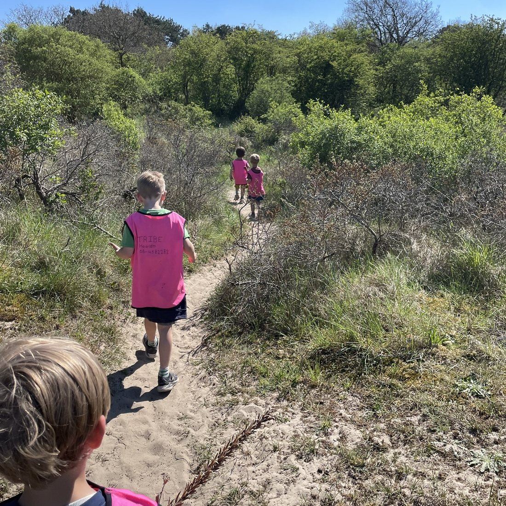

Alles wat je wilt weten
Veelgestelde vragen
Staat je vraag er niet bij? App of mail ons gerust.

Eten & dagindeling
Op de naschoolse dagen eten we bij binnenkomst fruit en crackers. Tijdens de vakanties en op studiedagen eten we fruit rond 10:00 uur en hebben we een afwisselende lunch — broodjes, wraps of tosti's.
Omdat de workshops en sportactiviteiten dagelijks verschillen en we rekening houden met het weer en populariteit, is het elke dag een verrassing. Op onze socials laten we zien wat we van plan zijn — dit kan nog wijzigen. Wel zeker: er is elke dag een workshop en sportactiviteit passend bij leeftijdsgroep en interesse.
Ja, tussen de workshops en sportactiviteiten is er een vrij spel-moment van een half uur. Eén keer per dag mag je kiezen om te gamen — het assortiment kiezen wij zelf, passend bij de leeftijd.
Aan het eind van de dag, als je nog aanwezig bent, mag er tv gekeken worden als we niet ergens anders mee bezig zijn. Wij kiezen het programma, met voorkeur voor educatieve programma's op NPO. Tijdens vakanties kan "bioscoop" op de agenda staan: dan toveren we de zaal om en kijken we een kinderfilm.
Ja, er is ruimte voor vrij spel tussen de activiteiten door: verkleden, kleuren, strijkkralen of optreden. Voor de grotere kinderen is er ook ruimte om te gamen, te tafelvoetballen of een potje UNO te spelen.
Activiteiten & regels
Op onze socials geven we een sneak peek van de planning, al kan dit wijzigen. Tijdens de naschoolse activiteiten volgen we altijd hetzelfde ritueel: ophalen, verzamelen, wat eten en drinken, en bespreken wat er op de planning staat. Daarna word je ingedeeld op activiteiten en workshops.
De activiteiten worden vooraf besproken en je mag meekiezen. Valt het toch tegen, dan bekijken we samen de mogelijkheden — je kunt bijvoorbeeld meedoen aan een andere workshop.
De algemene regels hangen in de ruimte en zijn er voor veiligheid en respect. We voeren een zero scheld- en pestbeleid. Voor een activiteit worden de regels uitgelegd en vertellen we wat er van jullie verwacht wordt.
Uitjes worden vooraf doorgenomen: waar we naartoe gaan, waarom en hoe lang. Buiten de locatie draagt iedereen een herkenbaar vestje en zijn de begeleiders telefonisch bereikbaar. Gaat een ouder niet akkoord, dan kan het kind op de locatie blijven voor een andere activiteit.
Veiligheid & team
Vallen kan altijd gebeuren. TRIBE is in geen enkel geval aansprakelijk voor letsel tijdens de uren die bij ons worden afgenomen — bij sporten, buitenspelen en dansen schuilt altijd een risico. Wij doen er alles aan om jullie veilig te houden: er is altijd iemand aanwezig met kinder-EHBO, en ons team bestaat uit gediplomeerde pedagogisch medewerkers met een verklaring omtrent gedrag.
Het meenemen van eigendommen is op eigen risico. Wij doen ons best alles bij elkaar te houden, maar er kan iets kwijtraken. Kleding die vies of kapot raakt tijdens spel of workshops is ook op eigen risico — kies kleding die vies mag worden.
Wij werken met een vaste groep van 5 pedagogisch medewerkers. Komt er een nieuwe juf of meester bij, of kom je voor het eerst? Dan leer je ons snel kennen.
Jouw verzorgers, ook tijdens de uren bij TRIBE — zij kennen jou en schatten in of je klaar bent voor TRIBE. Binnen onze macht nemen wij uiteraard onze verantwoordelijkheid als gediplomeerde pedagogisch medewerkers met een verklaring omtrent goed gedrag.
Ja. Zodra je bij TRIBE uren boekt, gaan je verzorgers akkoord met het verlaten van de locatie — bij uitjes, of tijdens vrij spel in een speeltuin of buiten sporten. Is dit niet gewenst? Geef het aan bij Opmerkingen tijdens de boeking.
Praktisch & boeken
Nee, maar je kunt tot 1 maand van tevoren annuleren. Wij houden rekening met de bezetting van personeel versus kinderen.
Er kan altijd file of een noodgeval zijn. Online kun je een uur bijboeken — bel of app ons even om het door te geven.
Nee, TRIBE is geen opvangorganisatie — wij organiseren activiteiten en vakantiekampen.
Je mag je eigen sportkleding meenemen. Op locatie hebben we ook t-shirts liggen voor tijdens sportactiviteiten.